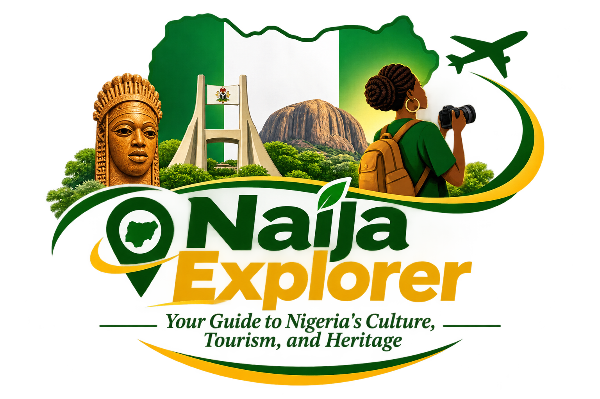

Site Name

Naija Explorer
This name was chosen because it represents exploring the beauty, culture, people, attractions, and traditions of Nigeria. The site is designed to help visitors discover exciting destinations and learn more about the country.
Optional Domain Name: naijaexplorer.org
Site Purpose
Naija Explorer provides information about Nigeria's tourist attractions, cultural heritage, regional foods, festivals, and travel opportunities. The site helps visitors learn about destinations and plan trips within Nigeria.
Scenarios
- What are the best tourist destinations to visit in Nigeria?
- Which cultural festivals take place throughout the year?
- What traditional foods should first-time visitors try?
- How can travelers prepare for a trip to different regions of Nigeria?
Color Schema
Forest Green (#1B5E20)
Used for headings, navigation, buttons, and footer sections.
Gold (#FFD54F)
Used for accents, highlights, call-to-action areas, and featured content.
Typography
Poppins - Used for headings, navigation menus, and buttons.
Merriweather - Used for body text, descriptions, and article content.
Wireframe - Mobile View
-------------------------------- | LOGO | -------------------------------- | Navigation | -------------------------------- | Hero Image | -------------------------------- | Featured Destination | -------------------------------- | Cultural Content | -------------------------------- | Footer | --------------------------------
Wireframe - Desktop View
------------------------------------------------------- | LOGO Navigation Menu | ------------------------------------------------------- | Hero Banner | ------------------------------------------------------- | Destination 1 | Destination 2 | Destination 3 | ------------------------------------------------------- | Cultural Information | ------------------------------------------------------- | Travel Tips | ------------------------------------------------------- | Footer | -------------------------------------------------------